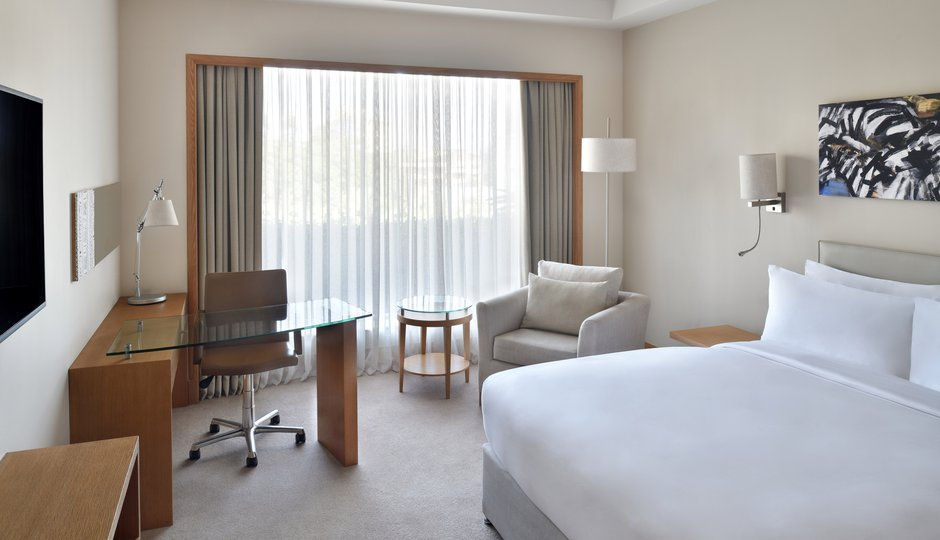

Superior Room
Superior Rooms are spacious and bright with floor-to-ceiling panoramic windows
and fully equipped with all of the latest facilities and amenities.
Contemporary in design, a key feature of the rooms is the glass partition between the bedroom and bathroom
Upgrade* to our Executive rooms, Sankara Executive rooms and Suites to enjoy;
Exclusive access to our 7th floor Sankara Lounge and a range of personalized services.
One-way complimentary airport transfer in a standard taxi.
Flexibility to check out 24hrs after your check in (subject to availability).
Complimentary laundery and pressing of two items per day during your stay.

Executive Room
Guests booking our Executive rooms have exclusive access
to our luxury seventh floor Sankara Lounge, including complimentary gourmet breakfast,
dedicated areas for work and relaxation, two state-of-the-art boardrooms, express check-in
and checkout and complimentary food and beverages.
Happyland Executive Room
The 11 Happyland rooms showcase the ever evolving,
vibrant and distinctly urban vibe of Nairobi city.
These rooms are a mix of a unique intimate chic design and a dose of elegance with walnut wooden walls,
marble bathrooms flooded with natural light. The guest rooms feature a king bed, wardrobe,
luggage rack, working desk and flat screen smart TVs with a view overlooking Nairobi’s commercial
and entertainment hub, Westlands.
Junior Suite
Prominently situated at corner sections of the hotel floor,
our seven Junior suites benefit from large panoramic windows offering extensive views over the city.
Contemporary in design, these suites are decorated to the highest standards in natural tones with rich silks,
wood, leather and modern African fabrics.
Executive Suite
Executive suites have direct access to Club Lounge with its spectacular sky view of Nairobi,
and range of exclusive services which include complimentary gourmet breakfast,
dedicated areas for work and relaxation, two state-of-the-art boardrooms, express check-in
and check-out and complimentary food and beverages.
Presidential Suite
The one of a kind Presidential Suite will fuel your imagination
with a heightened reflection of Sankara’s personality;
woven in the fabric of a modern design aesthetic and contemporary style.